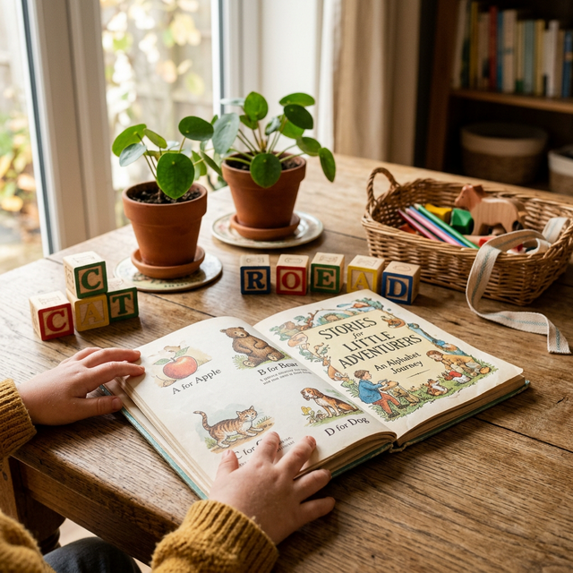

おうち英語で身につくのは、発音やリスニング
だけではありません。
毎日10分の習慣が、子供の「自分で考え、伝え、達成する力」を育てます。
おうち英語キズナClubが育むのは、英語力だけではありません。子供が自分らしく生き、社会で輝くための本質的な力を育みます。
英語の主語・述語を明確に伝える体験が、自分の意見を堂々と表現する力に。自分に備わった才能や好みを伸ばし、世界で自分らしく活躍する土台を築きます。
毎日10分のおうち英語をコツコツ続けることで、子供自身が「習慣化による習得」を体験。この力は英語に限らず、あらゆる学びや目標達成に応用できます。
ママも自分を大切に生きる姿を見せることで、子供も自分を大切にできる人に。教えるのではなく、一緒に楽しむことで親子の関係がより豊かになります。
家だけでバイリンガルは難しい。でも「英語が好き」「英語が楽しい」、それだけでも大きな力になります。

2〜5歳の間に始めることで、ネイティブに近い発音とリスニング能力を自然に獲得。中学以降の英語学習が圧倒的に楽になります。
コツコツ習慣化による習得を経験した子供は、その力を他の教科にも自分で取り入れます。「勉強しなさい」と言わなくても自発的に学ぶ子に。
英語の「I think...」「I want...」を日常で使うことで、アサーティブコミュニケーションの基礎が自然に身につきます。
家で嫌々やらせるのではなく、親子で楽しむおうち英語。「英語って楽しい！」という気持ちが、一生の学びの原動力に。
お子さまの年齢やご家庭のペースに合わせて、最適なプランをお選びいただけます。
おうち英語の第一歩。
動画で学んで、自分のペースで始められる入門編。
動画で知識を学び、ライブで千穂と1対1で深める。
おうち英語 × コーチングの1年間プログラム。
10年間のおうち英語を支える長期コミュニティ。
同志のママ仲間と励まし合いながら、一緒に歩きましょう。
Chiho Masuda
おうち英語ママコーチ。証券業界でフルタイムで働きながら、息子が2歳になる前から毎日10分のおうち英語を続けました。約10年間の実践を経て、息子は帰国子女と間違えられるほどの発音力と英語偏差値70以上（最高77）、英検準1級を達成。必ずしも器用なタイプではなかった息子が、コツコツ習慣化による習得の素晴らしさを体験し、今では他の勉強にも自分でその力を取り入れています。アサーティブコミュニケーションとアドラー心理学をベースにした独自の「千穂流おうち英語ママコーチング」で、英語力だけでなく自己実現力を育む親子の成長を全力でサポートしています。
おうち英語キズナClubで変化を実感されたご家庭の声をご紹介します。
英語が苦手な私でもできました。息子が自分から「今日もやろう！」と言うように。習慣化の力がつき、自分からやるようになったのが一番の変化です。千穂さんのコーチングで親子関係もぐんと良くなりました。
「おうち英語で自己実現」という考え方に共感して受講しました。息子は英語だけでなく、自分の意見をはっきり言えるようになり、学校でもリーダーシップを発揮しています。私自身も「母」以外の自分を取り戻せました。
千穂さんの実績に基づいたアドバイスは本当に説得力があります。娘に口出ししやすかったのですが、だいぶ見守れるようになり、娘も自信がついて学校で英語で堂々と発表する姿に感動しました。
ご不明な点はお気軽にご相談ください。
まずは体験セッションで、お話ししませんか？
「うちの子に合うかな」「私にもできるかな」
そう思って当然です。
だから、まずは体験セッション（60分）で
あなたのお悩みを聴かせてください。
体験セッション後に、どのプランにするかゆっくり考えていただいて大丈夫です。
無理な売り込みは一切しません。
これから始める方にも、すでに頑張っている方にも。